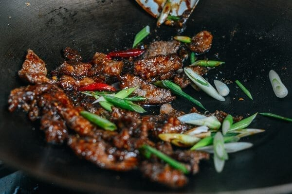

Mongolian Beef is actually not originated from Mongolia.
In fact, you can simply make this dish using boiling meat and dip it in sauces.
Not exactly a stir-fry dish like where they are catagorize in many menus.
This recipe will make dinner irresistible for all your family members!
Ingredients

8 ounces flank steak (225g, sliced against the grain into 1/4-inch thick slices)
1 teaspoon vegetable oil (plus 1/3 cup for frying)
1 teaspoon soy sauce
1 tablespoon cornstarch
2 tablespoons brown sugar
1/4 cup hot water
1/4 cup low sodium soy sauce or 1 1/2 tablespoons water and 2 1/2 tablespoons regular soy sauce
1/2 teaspoon minced ginger
5 dried red chili peppers (optional)
2 cloves chopped garlic
1 tablespoon cornstarch (mixed with 1 tablespoon water to make a slurry)
2 scallions (cut into 1-inch long slices on the diagonal)
Steps
Combine the sliced beef with 1 teaspoon oil, 1 teaspoon soy sauce, and 1 tablespoon cornstarch.
Marinate for 1 hour.
The beef should still be quite moist after it has marinated.
If it looks too dry, add a tablespoon of water to it.
Next, dredge the marinated beef slices in the
remaining 1/4 cup of cornstarch until lightly coated.
In a small bowl, mix brown sugar and hot water (or low sodium chicken or beef stock) until the sugar is dissolved.
Mix in 1/4 cup low sodium soy sauce.
If you don't have low sodium soy sauce, substitute 2 1/2 tablespoons regular soy sauce and 1 1/2 tablespoons water.
The saltiness of various soy sauce brands varies, so give the sauce a taste,
and adjust the amounts of sugar/soy sauce/water/stock to your own taste.
Heat 1/3 cup vegetable oil in the wok over high heat.
Just before the oil starts to smoke, spread the flank steak pieces evenly in the wok,
and sear for 1 minute (depending upon the heat of your wok).
Turn over and let the other side sear for another 30 seconds.
Remove to a sheet pan.
Tilt it slightly to let the oil drain to one side (lean it on a cookbook or cutting board).
The beef should be seared with a crusty coating.
Drain the oil from the wok, leaving 1 tablespoon behind, and turn the heat to medium-high.
Add the ginger and dried chili peppers, if using.
After about 15 seconds, add the garlic.
Stir for another 10 seconds and add the premixed sauce.
Let the sauce simmer for about 2 minutes and slowly stir in the cornstarch slurry mixture.
Cook until the sauce has thickened enough to coat the back of a spoon.
Add the beef and scallions and toss everything together for another 30 seconds.
There should be almost no liquid, as the sauce should be clinging to the beef.
If you still have sauce, increase the heat slightly and stir until thickened.
Plate and serve with steamed rice!